Explore all 46 public repositories ↗
| Manuscript / Publication Title | Venue / Publisher | Year | Status | Verified Link |
|---|---|---|---|---|
| Semantic Drift Before Inference: A Preprocessing Attack Surface in Vision–Language Models S.A.K. Upadhyay, S.B. Sharma, R.A. Borgalli, R. Vairagade |
Adaptive Defense and Intelligent Security Architectures for AI-Driven Cybersecurity (IGI Global), Ch. 6, pp. 171–202 | 2026 | Accepted / DOI |
DOI: 10.4018/979-8-2600-5116-0.ch006 · Code |
| Fake news detection using deep learning models: A novel approach Sachin Kumar, Rohan Asthana, Shashwat Upadhyay, N. Upreti, M. Akbar |
Transactions on Emerging Telecommunications Technologies (Wiley) | 2020 | Published |
DOI: 10.1002/ett.3767 |
| Protocol-Driven Framework for Implementing an Integrated Multimodal Transportation System in Jaipur, India S.A.K. Upadhyay (mentor: Prof. Nand Kumar) |
Proceedings of the 18th International Asian Urbanization Conference (IAUC 2026), p. 122 | 2026 | Published |
JUMTA Framework |
| An IoMT-Based Wearable Prototype for Sustainable Remote Patient Monitoring S.A.K. Upadhyay, A.K. Singh, A.A. Tiwari, R. Borgalli |
National Conference on Data-Centric AI (DASDA 2025) | 2025 | Best Paper |
ResearchGate |
| Technology Intervention for an Efficient Judicial System Y. Jain, S.A.K. Upadhyay |
Conference Proceedings (ResearchGate Verified) | 2025 | Published |
ResearchGate |
| SentinelAI: Adaptive Behavioral Risk Framework for Real-Time SSH Threat Detection S.A.K. Upadhyay |
Cybersecurity Systems Venue | 2026 | Under Review |
SentinelAI Code |
| PhysioFM: A Diagnostic Framework for Transformer-Based Remote Photoplethysmography S.A.K. Upadhyay, S.B. Sharma, N. Kumar, S. Kumar, Bhoomika |
Int’l Conf. on Next-Gen Structural Health Monitoring Systems (SHMS-2026), Paper ID 123 | 2026 | Presented |
PhysioFM Code |
| Domain | Core Tools & Frameworks |
|---|---|
| Programming & Core | Python 3.10+ · C++ 17/20 · TypeScript · JavaScript · SQL · Bash |
| AI & Machine Learning | PyTorch · Hugging Face Transformers · Swin-V2 · TimeSformer · Scikit-learn · TorchVision |
| Computer Vision & OCR | OpenCV · YOLO (v8/v9) · CLIP Embeddings · Waveform Extraction (rPPG) · Spectral Analysis · Tesseract OCR |
| Cyber & ML Security | VLM Preprocessing Auditing (SEV) · Isolation Forests (Zero-Label) · SSH Threat Modeling · CICIDS2017 Benchmark |
| Infrastructure & Systems | SUMO Traffic Simulation · Unity 3D Engine · GIS Integration · Docker · Git & GitHub Actions CI/CD · LaTeX |


| Repository | Primary Focus | Language | Architecture / Stack |
|---|---|---|---|
| PhysioFM | Non-contact rPPG foundation model & optimization diagnostics | Python |
Swin-V2 · STDS · UBFC-rPPG · PyTorch |
| Guardian-Travel-Twin- | 25 km multimodal corridor digital twin & microscopic simulation | JavaScript |
SUMO · Unity 3D · YOLOv8 · MoHUA IMPACT |
| semantic-drift-vlm-attacks | Preprocessing attack surfaces & SEV defense in VLMs | Python |
IGI Global 2026 Chapter · RGBA-to-RGB Auditing |
| SentinelAI | Zero-label behavioral anomaly detection engine for SSH streams | Python |
Isolation Forest · CICIDS2017 · Real-Time Engine |
| JUMTA | Jaipur integrated multimodal transit & mobility architecture | TypeScript |
IAUC 2026 · IMPACT Protocol · Public Transit |
| Semantic-Ctrl-F | Visual-semantic document retrieval & contrastive indexing | Python |
CLIP · Vector Indexing · Cross-Modal Retrieval |